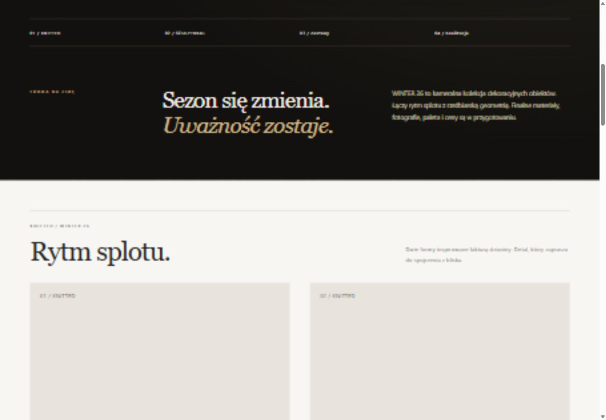
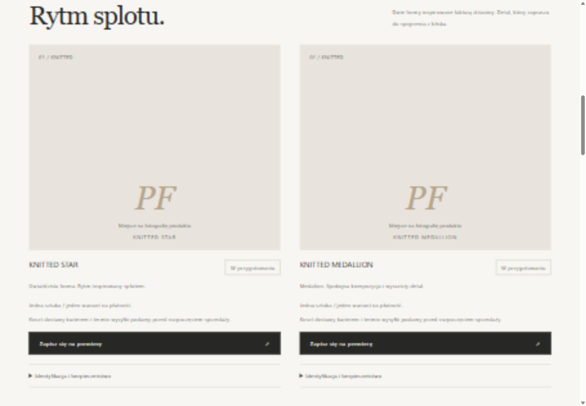
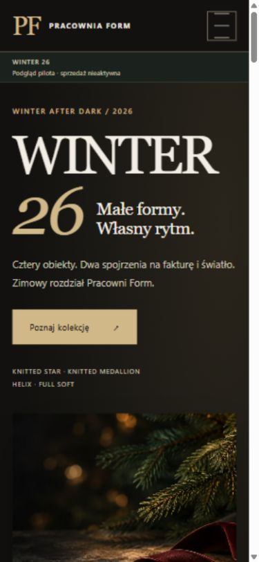
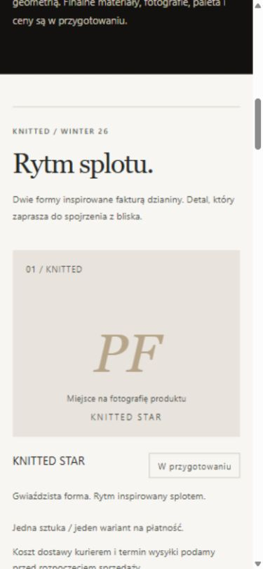
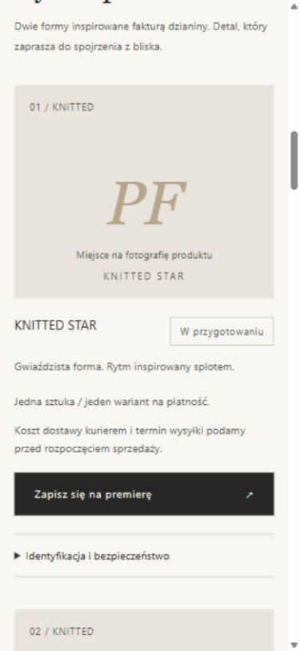
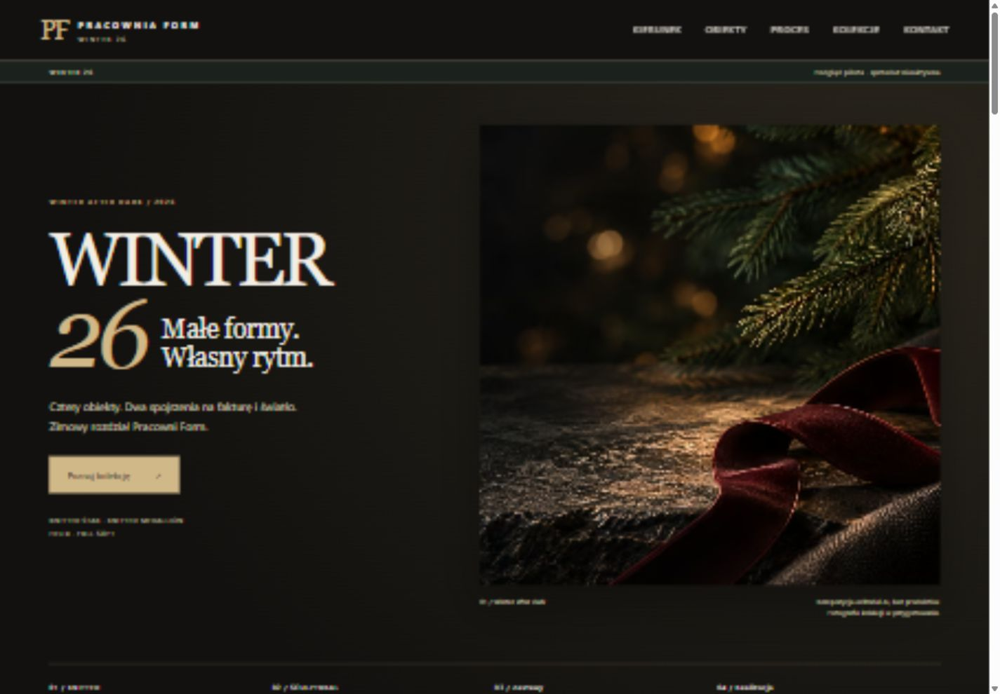
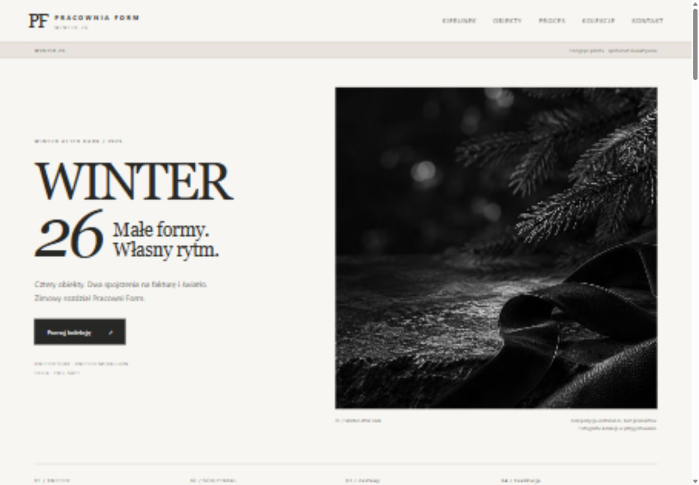
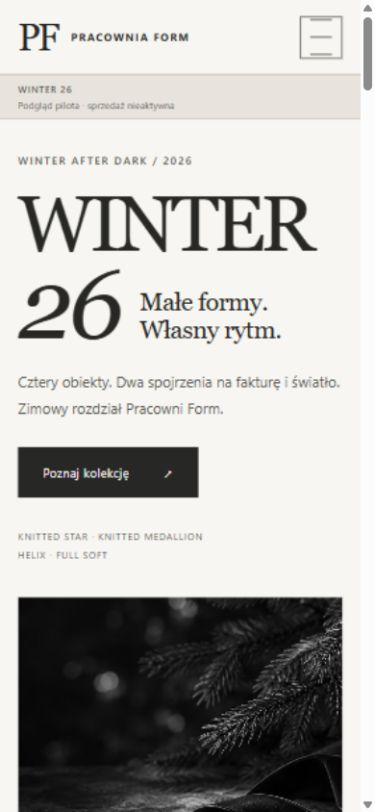
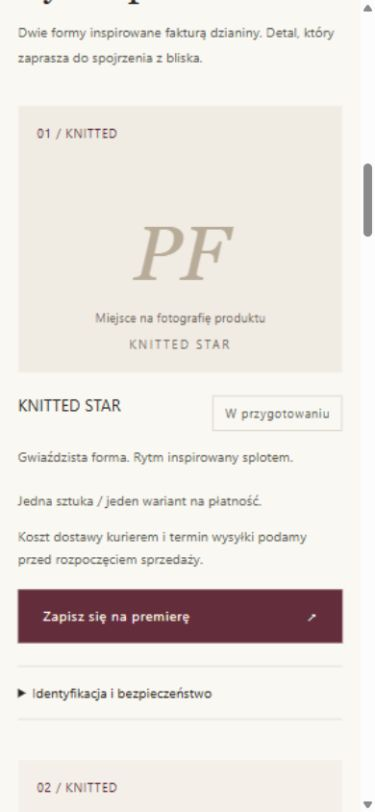

Pracownia Form / PR #10 / 03.11.2026
Zatwierdzona hybryda.
Decyzja z 03.11.2026: otwarcie R04 + neutralne karty zapowiedzi. Zatwierdzono kierunek wizualny; publikacja i sprzedaż pozostają nieaktywne.
Hybryda — aktualny podgląd
Ciemne otwarcie R04 i jasne karty pozostają w dotychczasowym układzie. Kadry pokazują hero, granicę otwarcia i sekcji KNITTED oraz kartę z grafitowym CTA.











Archiwum porównania e230d9a
Desktop — viewport 1440 px




Mobile — viewport 390 px






Układ, teksty i logika produktu pozostają zgodne z d60640f. Zrzuty pokazują widoczny obszar przeglądarki; szerokości viewportu zawierają pasek przewijania. Całe strony są dostępne przez linki powyżej.
Raport kontrastu i zakres kontroli: PILOT_PALETTE_REVIEW.md.